← ChatArena（仮）開発中のページへ ・ AI時短ラボ
暴走した機械がうろつく封鎖区域で、部品を回収して稼ぐ「回収屋」になるアクションゲーム。その仕事ぶりは会社が生配信していて、視聴者がコメントで妨害したり応援したりしてきます。
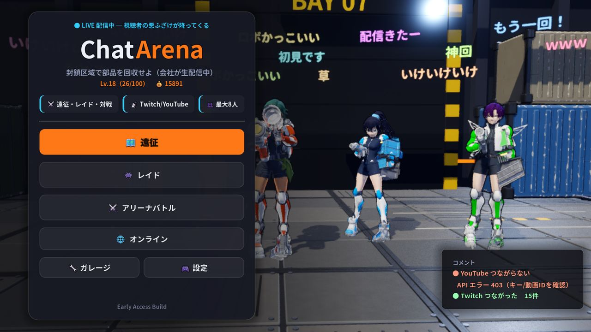
港の工業地帯で機械が一斉に暴走し、一帯が封鎖されました。中に残った部品は高く売れるので、会社が「回収屋」を雇って送り込み、その様子を番組として配信しています。
プレイヤーは借金や事情を抱えた出場者のひとり。両腕と背中に武器を付けて出撃し、暴走機械を倒して部品を持ち帰ります。
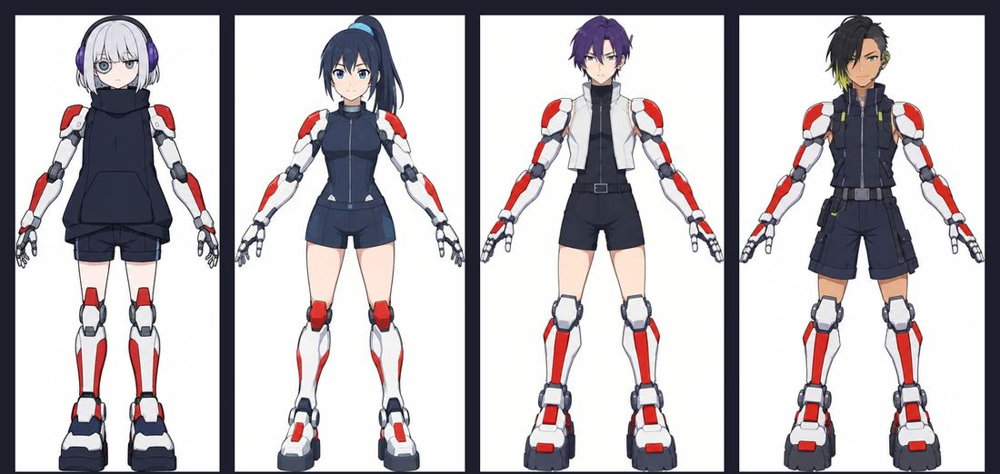
タイトル画面で「遠征」「レイド」「アリーナバトル」のどれかを選びます。遠征とレイドは仲間と協力、アリーナバトルは対戦です。
広いマップで拠点を攻めて強くなり、最後に巨大な「夜の王」を倒す。いちばん遊びごたえのあるモード。
巨大ボスに全員で挑む。予告を見て大技を避け、スキを叩く。プレイヤーがボス役になる遊び方もあります。
闘技場で撃ち合い、場外に落とし合う。リングアウト、バトルロイヤル、チーム戦など8種類。
毎回ちがう地形のマップに、仲間と（または味方の Bot と）出撃します。昼のあいだに育って、夜にボスと戦う。これを2日くり返します。
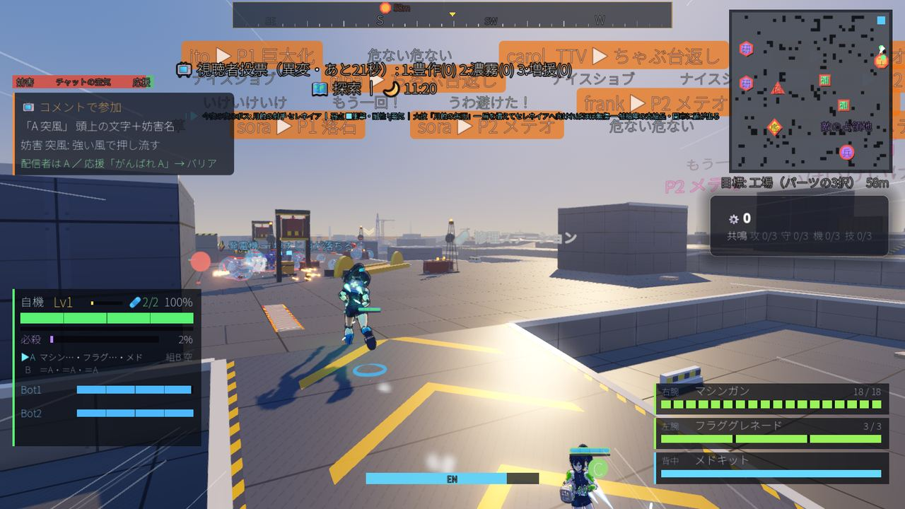
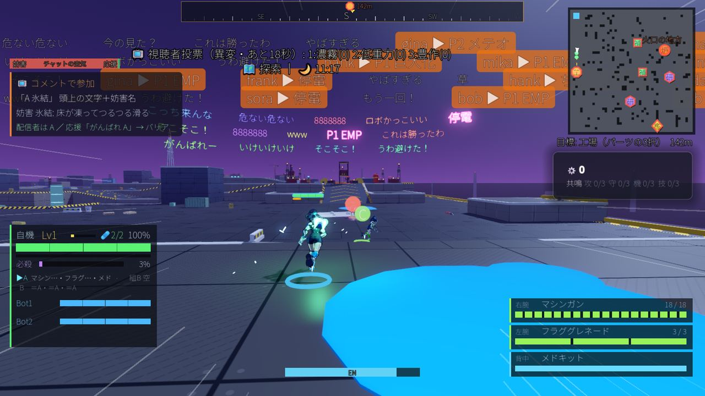
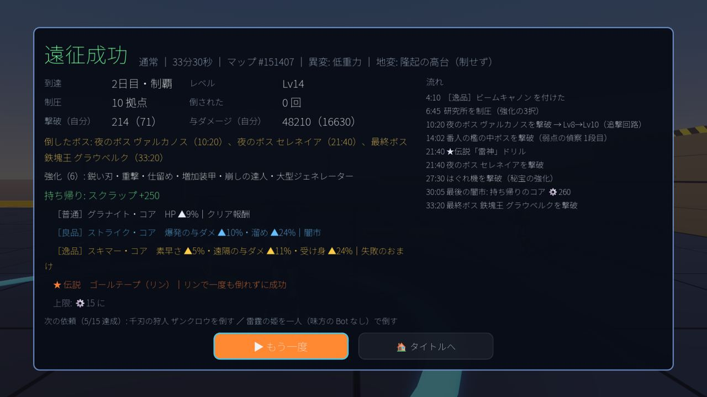
レイドは今回の画像がありません。ボスの見た目は差し替えの途中です。工事中
| ルール | 勝ち方 |
|---|---|
| リングアウト | 縮んでいく安全な範囲の外に落とすか、倒す。最後の1人がそのラウンドの勝ち。先に決めた回数勝った人が優勝。 |
| バトルロイヤル | 最大10人の個人戦を1回勝負。落ちた順に順位がつく。 |
| チーム戦 | 2対2〜5対5。味方には攻撃が当たらない。相手を全滅させるか、時間切れの時に残っている人数が多い方の勝ち。 |
| 破壊 | 場外なし。倒されると残機が1減って復活。残機が尽きたら脱落。 |
| 陣取り | 丘の上に1人だけで立つとポイント。取り合っている間は誰も入らない。 |
| 時限爆弾 | 爆弾を持たされたら、誰かに体当たりして押し付ける。爆発したら残機が1減る。 |
| レース | ゲートを順番にくぐって、決まった周回を先に走り切る。 |
| 防衛（ホード） | 場の縁から押し寄せる敵の波をしのぐ。しのぎ切ったら倒した数で勝ち負け。 |
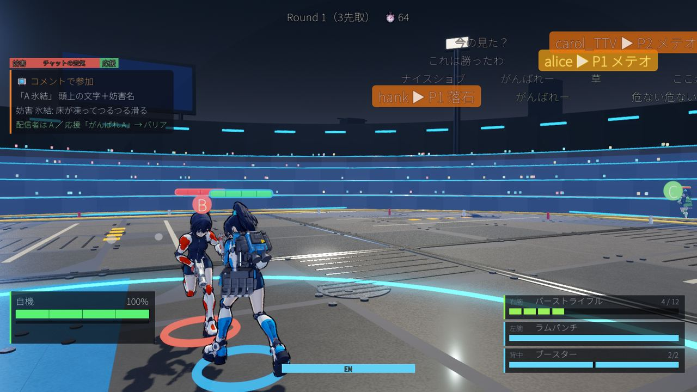
キーボードとマウス、またはパッド（Xbox の配置で表記）で遊べます。割り当てはタイトルの「設定」でいつでも変えられ、画面の案内もそれに合わせて変わります。まずは「基本」の印がある操作だけ覚えれば遊べます。
| 操作 | キーボード・マウス | パッド | ひとこと |
|---|---|---|---|
| 移動 | W A S D | 左スティック | |
| 視点 | マウス | 右スティック | 感度と上下の反転は設定で |
| 右腕（銃） | 左クリック | RT | 押しっぱなしで連射する武器もある |
| 左腕 | 右クリック | LT | 盾は長押しで構える |
| ジャンプ | Space | A | 空中でもう一度押すと空中ジャンプ、長押しでホバー |
| ダッシュ | Shift | B | 長押しで走り続ける。攻撃のスキを消すのにも使える |
| ロックオン | ホイール押し込み または Q | R3 | ホイール／右スティックの左右で相手を切り替え |
| 背中の武器 | E | RB | ミサイル・ブースターなどの大技 |
| 必殺技 | V | LB | 遠征・ボス討伐で、ゲージが満タンの時 |
| 調べる・拾う | F | X | 強化の箱・落ちている部品。強化の3択の決定にも使う |
| 換装 | R | 十字キー↑ | 遠征で、腕と背中の組Aと組Bを入れ替える |
| 修理キット | G | 十字キー← | 遠征で体力を回復 |
| 巡航ブースト | C | L3 | 溜めてから長い距離を一気に走る |
| 作戦地図 | Tab または M | View ボタン | ピン・攻撃の指示・集合を仲間に出せる。開いている間は動けない |
| 一時停止 | Esc | Start |
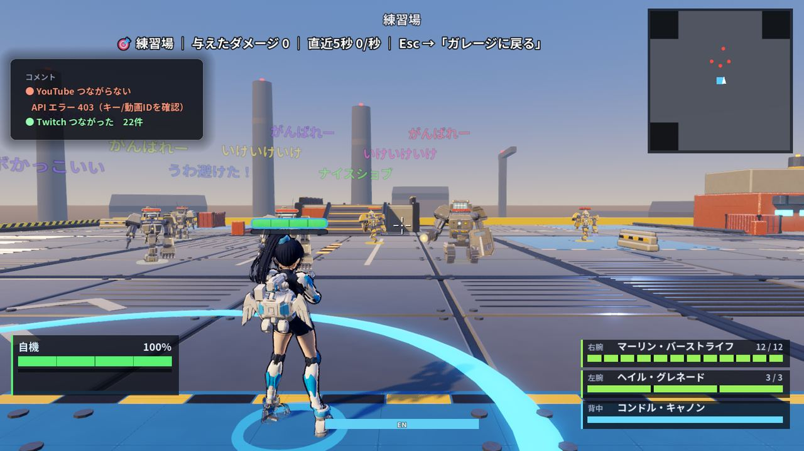
配信しながら遊ぶ人向けの仕組みです。YouTube か Twitch の配信につなぐと、視聴者がチャットに書いたコメントが、そのまま試合の妨害や応援になります。配信しない人は使わなくても普通に遊べます。
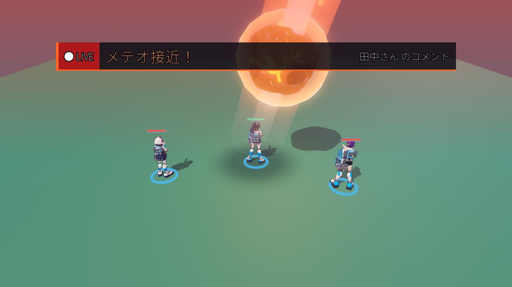
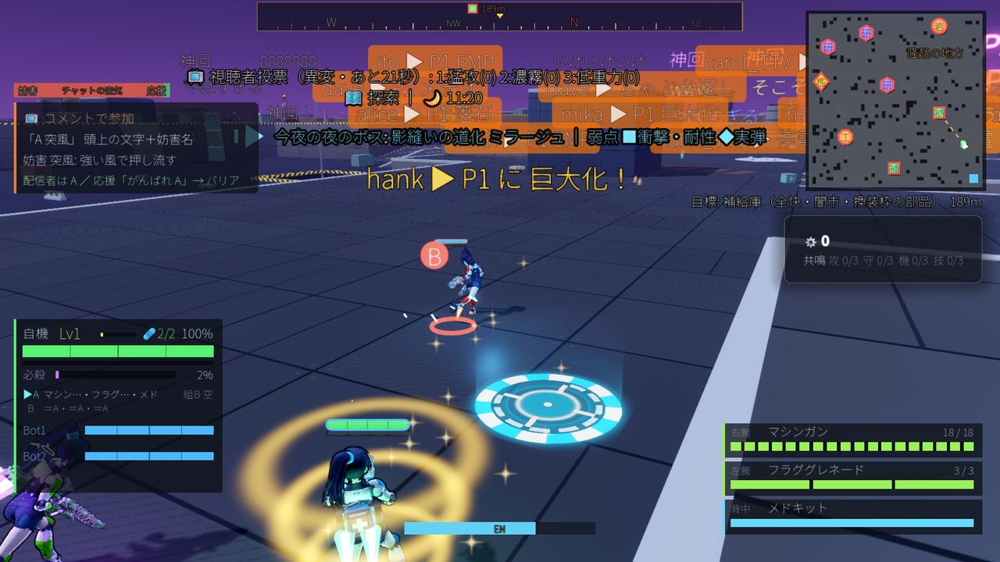
YouTube・Twitch へのつなぎ方は、ゲームの中の案内ページで説明しています。
12人から選んで出撃します。全員、体の一部を機械に替えた「改造済み」の回収屋です。工事中 キャラごとの得意な武器・必殺技・パッシブは作っている途中です。
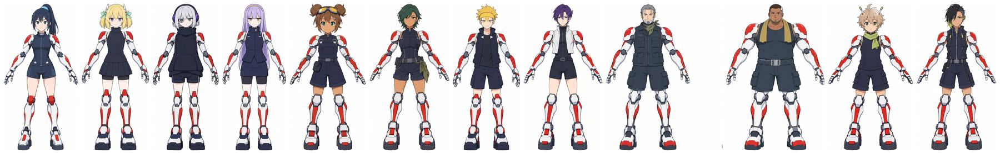
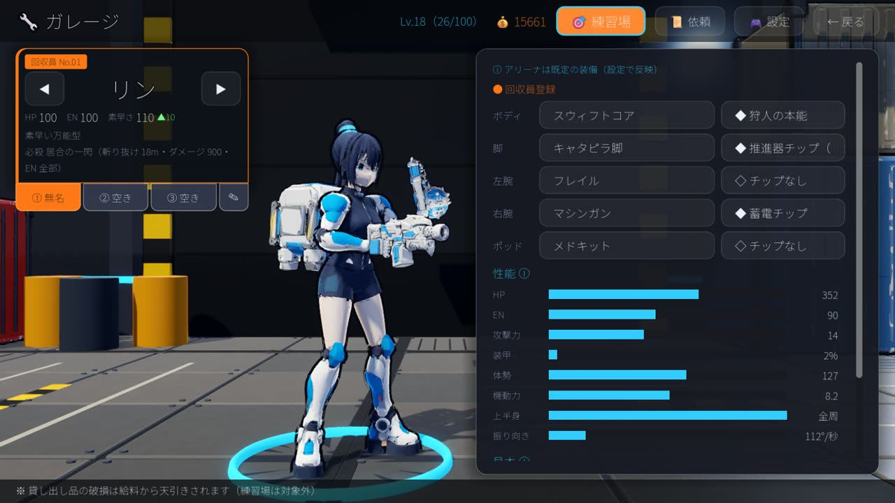
工事中 部品の数・コアの効果・お店（ゲーム内のお金で買う仕組み）は調整中です。
今は、1人が「ホスト」になって部屋を立て、ほかの人がホストの IP アドレスを入れて参加する形です。
離れた場所の友だちと遊ぶ時は、今は Tailscale（無料の仮想ネットワーク）を全員が入れて、同じグループに入ってから、ホストの Tailscale のアドレスでつなぐ方法を試しています。工事中 Steam のフレンド招待やマッチングは、まだありません。
人数が足りない時は Bot が入ります。ソロで遠征やアリーナに出ることもできます。
開発中のゲームなので、遊んでいると変わっている所や、仮のままの所があります。今わかっているものをまとめました。